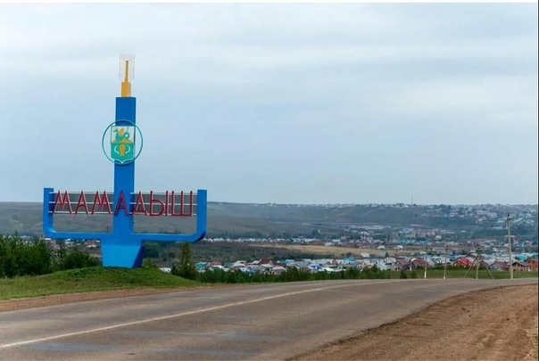

Мамадышский район

Мамадышский район — это административный район в
Татарстане, Россия. Он расположен на востоке республики и славится
своими живописными природными пейзажами, разнообразием флоры и фауны.
Основные факты о Мамадышском районе:
- Административный центр: Город Мамадыш, который является также
культурным и экономическим центром района.
- Основу экономики составляют сельское хозяйство,
а также переработка сельскохозяйственной продукции. В
районе активно развиваются предприятия пищевой промышленности.
- Культура и традиции: Район богат культурными традициями и историей.
Здесь проводятся различные фестивали и мероприятия, посвященные
татарской культуре.
- Природа: Мамадышский район известен своими природными красотами,
включая леса, реки и озера, что делает его популярным местом для
отдыха на природе.
- Туризм: В районе есть несколько достопримечательностей,
включая исторические памятники и природные заповедники,
что привлекает туристов.